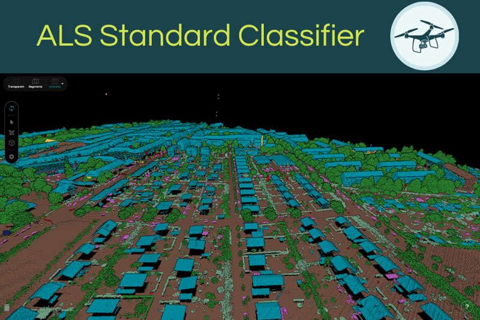
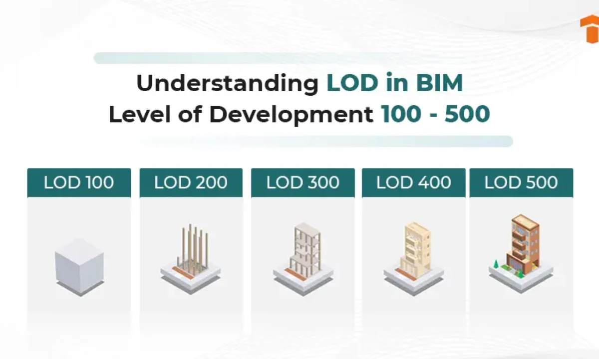
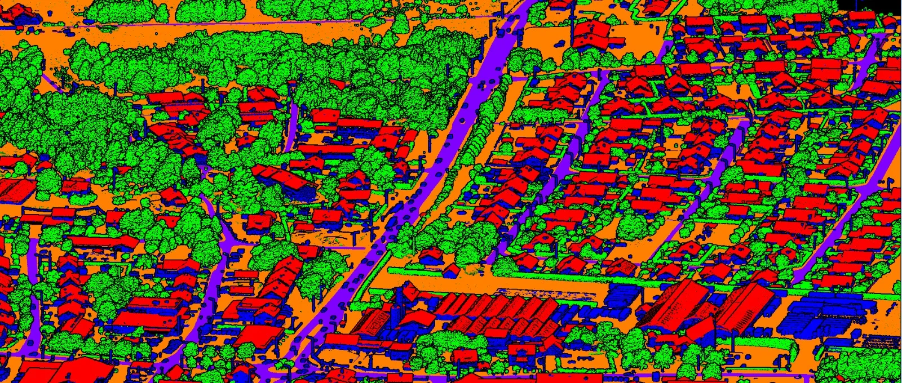
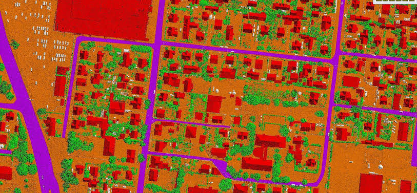
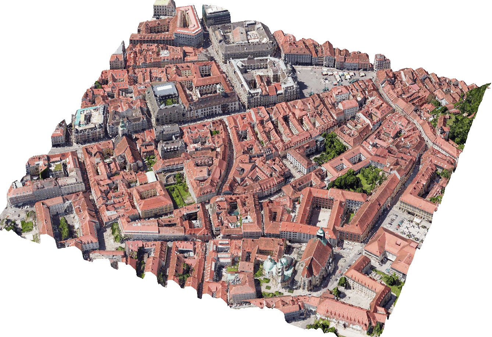
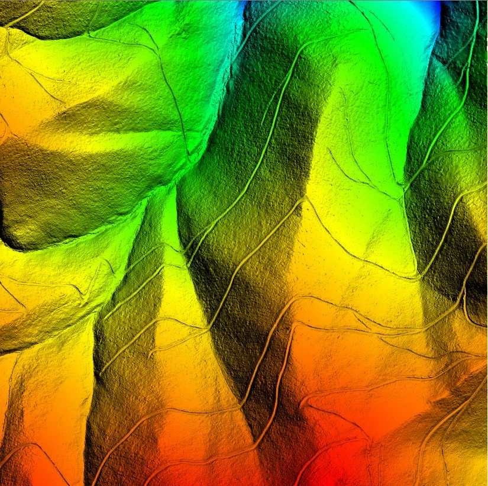
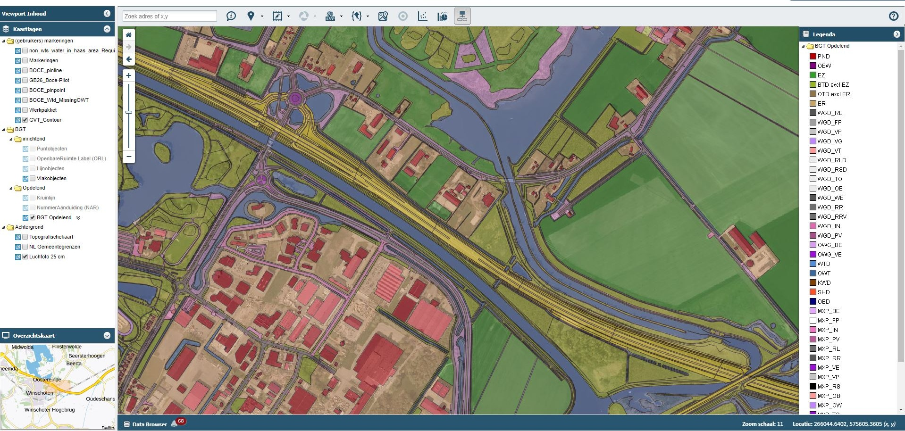

STAGE 01 // INGESTION01/04
Data Intake & Initial QA/QC
Review LAS/LAZ/E57 data, coordinate systems, project specifications, point density, and dataset completeness before production starts.
INPUT: LAS / LAZ / E57 / TIFF

GeoProcess Consulting delivers high-density Aerial & Mobile LiDAR classification, LOD 500 Scan-to-BIM modeling, UAV Photogrammetry, and Enterprise WebGIS architectures for global AEC, utility, and civil engineering leaders.

Bare-earth DTM/DSM generation, powerline catenary modeling, and corridor asset inventory.

GeoProcess Consulting (also written as Geo Process Consulting) is an India-based geospatial engineering and data-processing partner. We help engineering, AEC, surveying, infrastructure, and utility teams with LiDAR point-cloud classification, GIS mapping, DTM/DSM generation, photogrammetry, CAD conversion, Scan-to-BIM, and quality-focused production workflows.
Swipe horizontally to explore each stage.
Every deliverable undergoes multi-stage topological validation, coordinate transformation verification, and rigorous QA/QC compliance.
High-precision airborne, terrestrial (TLS), and mobile mapping (MLS) point cloud processing. We classify bare earth, vegetation tiers, high-voltage transmission corridors, rail tracks, and highway assets to strict ASPRS standards.

Intelligent parametric BIM models and 3D CAD drafting from laser scans for industrial plants, heritage architecture, and MEPF retrofit engineering.

Aerotriangulation, bundle block adjustment, and seamline-edited True Orthophoto mosaics with sub-pixel ground control accuracy.

3D breakline compilation, hydrological conditioning, flood-plain modeling, and volumetric cut/fill stockpile analytics.

Custom spatial database design, utility network topology, parcel cadastral mapping, and 3D WebGL geospatial dashboards.


3D curb-to-curb vectorization, clearance analysis, and signage inventory across 450+ linear kilometers.

Multi-station cloud-to-cloud registration, deformation monitoring, and 2D/3D as-built floor plans.
Answers to common questions about GeoProcess Consulting, our services and project delivery.
We provide full-lifecycle geospatial analytics and engineering data processing, including:
Danger zone detection for tree pruning near power lines using LiDAR and GIS is a digital safety system. It uses laser scans and maps to find trees that are too close to electric wires. This helps crews clear branches before they cause power outages or fires.
Advanced 3D building classification and vectorization converts unorganized 3D spatial data into clean, structured geometric vectors (like polygons and shapefiles).
Our automated pipeline isolates key infrastructure elements—such as towers, conductor sags, ground surfaces, and buildings—allowing utilities to export directly into GIS databases, CAD layouts, or BIM platforms for structural audits.
Turnaround depends on project scope, point density, and whether the data is linear corridor or area-based:
Upload your sample dataset or share your project specifications. Our engineering leads respond within 4 business hours with a pilot proposal and turnaround schedule.